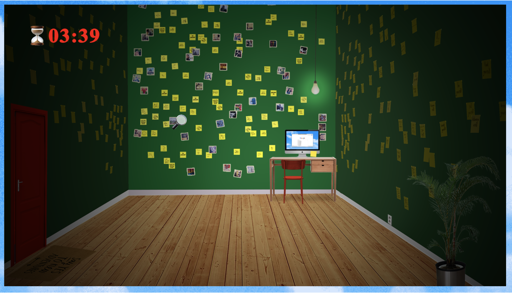
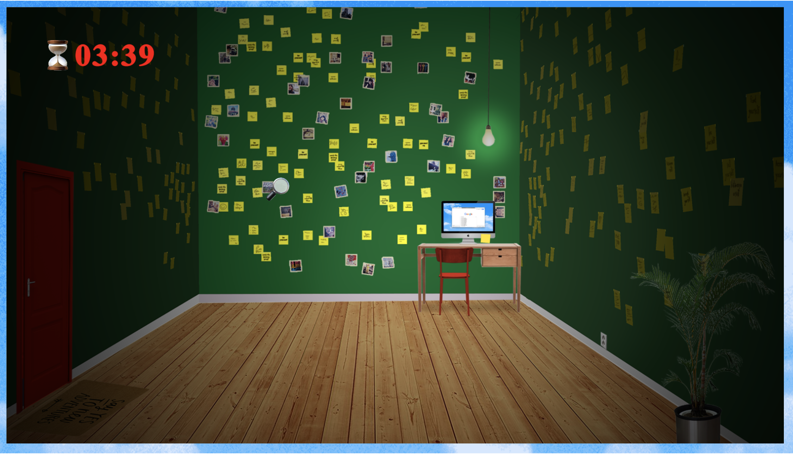

EMMA VERHOEVEN!!!
Welcome to this handmade website by & about Emma Verhoeven.About
Emma is an artist, designer, writer, organiser, and educator living and working in Rotterdam, NL. As a founder and member of Extra Practice she is passionate about creating collective space & time for playful self-reflection and experimental learning. In her own visual & installation work she investigates the evolving definitions of success and meaning within commerce-driven media landscapes, mainly focusing on self-improvement and mental health themes. Her latest fascination is regenerative living, sprouted from an ongoing collaboration with agro-ecologist-sister Renée.
A few months ago Extra Practice hosted ùòåÃ∂ùòπÃ∂ùòµÃ∂ùò≥Ã∂ùò¢Ã∂ ùìîùì∂ùì∂ù왂Äôùìº Practiceüîë üßúü誂Äç‚ôÄÔ∏è üß©, an exhibition of Emma's favourite projects. Click this arrow to see some pics:


FAQ
What does Emma Verhoeven do, exactly?
Listen, there's just a lot of things, ok. Emma never chose one path, one medium or one topic, but instead just followed all her whims and interests and that means that now she finds this question quite hard to answer, even though she really enjoys all of the things does! She basically goes to the studio (XP) whenever she can, and works on either something to pay the bills, like video editing or graphic design or illustration (if you're looking for someone, hit her up), or something she wants to do, like building a weird game or organising a ThemeWork event or writing a newsletter or something else.
Ok, but if she had to choose one description, what would we call Emma?
Emma often uses the word 'media artist' (or 'mediakunstenaar' in Dutch) to describe herself. It works quite well because she uses a lot of different media as her material, her work is often about digital media and then the result also is often formatted in a (partly) digital medium. But you can just call her Emma
How does Emma make a living?
Understandable question! Besides the fun autonomous stuff, Emma teaches workshops, sometimes at art academies, often at high schools via MU Hybrid Art House, and also gets hired to do animations, video editing, graphic design and illustration for both companies and individuals. She even does translation work if you pay her well, and she'll teach a Dutch course next year. Every now and then she'll apply for an artist grant, she should probably start doing that again..
What are some examples of Emma's projects?
üåµ ThemeWork (event series)
ThemeWork is an ongoing series of events hosted at Extra Practice,
where we collectively work on important and serious unpaid tasks (like filing taxes), but
with a unique theme. The
theme changes every session, and is reflected in the space’s decor, the snacks, the online
communication, and sometimes in the dress code.
Instead of isolating ourselves with our laptops, we enhance the value of our unpaid work by
making it a fun and collective experience.
At the same time, we are conducting important research: do we work better if we imagine
ourselves in a wellness resort? Or a daycare center? Dressed like cowboys?
If you want to attend the next ThemeWork session, keep an eye on the @extrapractice
instagram page.
üó∫Ô∏è United Mental States (workshop, film, installation)
United Mental States is a
collection of mental-health-inspired islands envisioned by
youth
from
Brabant, that were created during multiple workshops Emma developed with Mu Hybrid Art House over the
last year, then translated into a spatial work for their 25-year-anniversary-exhibition
Hybrid
Tales
For Hybrid Times. The various continents in this ‘3D collage’ represent common States of
young
minds
as associative visual landscapes; a 30 min video projection shows personal interviews
about
the
current state of their mental health, with their self-imagined ‘mental landscapes’ as
backdrops.
Emma absolutely loved working with young people, working on serious topics, working in
Brabant,
working
with
neurodiverse kids, working with MU, working with her hands, working with friends. She would
like to
do
more of it and get better at it.


üîë Escape Here Now (installation, game)
If you’ve ever experienced an escape room, you will know the thrill of looking around for clues, finding patterns in everything, and feeling like the hero in a real adventure story. For under €30 you can have a fun hour trying to crack codes and find the key to your fake escape. But escape rooms are just superficial entertaining experiences you can buy, and I want to spend my time productively and meaningfully. I want to play the lead role in my own adventure. I want real experiences!
I want to travel the world to discover myself, go on a retreat to find myself. Lift up my soul on the yoga mat, but also keep both feet on the ground; need to stay down to earth. Straightforward. Got to move forward. Set goals, reach my full potential. Push myself, be more productive. Dream big, trust the universe. Let go of fears and stress. Do what I want! Enjoy life, live it to the fullest. Have fun, be free, escape!
This escape room will make you more productive, centered, grounded, motivated, charismatic, kind, beautiful, creative, healthy, ambitious, fit, profitable, driven, relaxed, calm, happy, passionate, reflective, aware, brave, humble, confident, intelligent, skilled, accepting, balanced‚Ķ play a thrilling game of self-discovery and escape from the maze of self-improvement! 



üìΩÔ∏è Translocal Lives (workshop, film)
The 6-week course I co-developed as part of Translocal Lives, a research project by Amanda Paz Alencar and Camila Sarria Sanz. I got to teach 14 newcomers in Rotterdam to translate their ideas on place-making and belonging into short films, using their smartphones and open-source software. We screened the final films in KINO Rotterdam.


üíª Once Upon a Time in Desktoppywood (workshop)
An Introduction into Non-Professional Modes of Digital Storytelling. Workshop created for the MA Critical Inquiry Lab at the Design Academy Eindhoven in collaboration with Benjamin Earl. The workshop program and resources can be found here.
What is Emma working on right now?
These days, Emma is designing & illustrating money bills for a time bank, teaching her UMS workshop at a highschool in Geldrop, and continuing a thread she started last spring about regenerative living. It's also getting wintery, so she is taking it easy and going to the cinema a lot.
What does Emma want to achieve in the future?
Excellent question. The answer has often changed... Currently, Emma is working & dreaming with her two sisters on a plan to start a regenerative farm together, where she will take care of the community building and arts & culture part of the organisation... What a beautiful dream. It might come true sooner than they think!
Contact
email Emma at emmavrhvn [at] gmail.com or find her on instagram